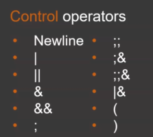
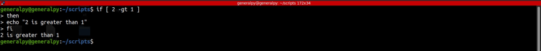

Step 2 : Command Identification
After tokenisation command type is identified.
There are two types of commands :
1. Simple commands are the commands which end with control operators.

These are usually in the format of command name and then arguments.
echo abc 1 2 a vIn above command echo is the command name and everything following it are its arguments hence giving output abc....
echo abc echo 123
In above command, there is no control operators between 2 echo statements hence first echo is regarded as command and everything following it as its argument including the second echo.

echo abc; echo 123
In above command, there is a control operator ; between two echo statements hence they are regarded as different echo statements.
2. Compound commands provide programming constructs like if, else ,while etc to bash. They begin with a keyword which has special meaning for the interpreter and end with another keyword.
if [ 2 -gt 1 ]
then
echo "2 greater than"
fi
Above command is a compound command which is beginning with if and ending with fi. If statements provide logical control.

Notice how prompt was extended to multiple lines when if was encountered.